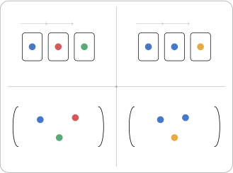

Hoofdstuk 2Discrete wiskunde: Telformules

Leerplandoelstellingen (GO! Navigator)
Gevorderde wiskunde (WD3_06.08)
-
• WD3_06.08.33 (MD 06.08.34) De leerlingen lossen telproblemen op met en zonder herhaling en waarbij de volgorde al dan niet van belang is.
-
– afbakening: binomium van Newton
-
– afbakening: driehoek van Pascal
-
– afbakening: duiventilprincipe van Dirichlet
-
Extra uitleg: variaties, permutaties, combinaties, herhalingsvariaties, herhalingspermutaties, herhalingscombinaties, telformules
I Inleidende opmerking
Bij het kiezen van enkele elementen uit een verzameling hebben we twee mogelijkheden:
-
• de keuze gebeurt zonder teruglegging van de reeds gekozen elementen. M.a.w. elk element kan ten hoogste één maal gekozen worden. We spreken van keuzes zonder herhaling.
-
• de keuze gebeurt met teruglegging van het reeds gekozen element. M.a.w. elk element kan meerdere malen gekozen worden. We spreken van keuzes met herhaling.
Vervolgens kan ook de volgorde waarin de elementen gekozen worden een rol spelen:
-
• Is de volgorde waarin de elementen gekozen worden belangrijk, dan spreekt men van een variatie.
-
• Is de volgorde waarin de elementen gekozen worden niet belangrijk, dan spreekt men van een combinatie.
Dit alles zorgt ervoor dat er vier types keuzes zijn om telproblemen aan te pakken.
| Geen herhaling | Herhaling toegestaan | |
| Volgorde belangrijk | ||
| Variatie | Herhalingsvariatie | |
| (= geordend) | ||
| Volgorde niet belangrijk | ||
| Combinatie | Herhalingscombinatie | |
| (= niet geordend) |
1 Uitgewerkt voorbeeld
Zie handboek VBTL Combinatoriek en Kansrekening p.16-17, bekijk de 4 situaties.
2 Oefeningen
Zie handboek VBTL Combinatoriek en Kansrekening Nr. 11 p. 22
II Keuzes zonder herhaling
1 Variaties
Voorbeeld
Een voetbaltornooi wordt gespeeld door vier ploegen: A, B, C en D. Elke ploeg moet tegen elke andere ploeg een uit- en een thuismatch spelen.
Stel een lijst op van alle mogelijke wedstrijden. Hoeveel wedstrijden zijn er?
\[ \begin {array}{cccc} AB & BC & CD & DA\\ AC & BD & CB & DB\\ AD & BA & CA & DC \end {array} \]
\[ AB \neq BA \;\Rightarrow \; \text {volgorde is belangrijk} \qquad \text {en}\qquad AA\ \text {mag niet} \;\Rightarrow \; \text {herhaling mag niet} \]
\[ \#=\overset {\text {thuis}}{4}\ \overset {\text {EN}}{\cdot }\ \overset {\text {uit}\neq \text {thuis}}{3}=12 \]
\[ \text {Dit zijn } \;V_4^{\,2}=12 \;\;(\text {2-variaties van 4 elementen}). \]
Definitie
Een p-variatie van n elementen is een geordend \(p\)-tal van verschillende elementen, gekozen onder de \(n\) gegeven elementen (\(p\leq n\)).
Notatie
\[ V^p_n \]
Eigenschap
Twee p-variaties van n elementen kunnen enkel van elkaar verschillen door
-
• de gekozen elementen
-
• de volgorde van deze elementen
Aantal
\[ \text {keuze 1e el.}\ \overset {\text {EN}}{\cdot }\ \text {keuze 2e el.}\ \overset {\text {EN}}{\cdot }\ \text {3e el.}\ \cdots \ \overset {\text {EN}}{\cdot }\ \text {\(p\)e el.} \]
\[ \Rightarrow \quad V_n^{\,p} =\underbrace {n\cdot (n-1)\cdot (n-2)\cdots (n-p+1)}_{\text {\(p\) factoren}} \]
Voorbeelden
-
(a) \(V_4^2=4.3=12\)
-
(b) \(V_5^3=\opl {5 \cdot 4 \cdot 3 = 60}\)
-
(c) \(V_{10}^4=\opl {10 \cdot 9 \cdot 8 \cdot 7 = 5040}\)
Tweede vorm voor het aantal p-variaties van n elementen
We herschrijven de gevonden formule m.b.v. faculteiten:
\begin{align*} V_n^{\,p} &=n\cdot (n-1)\cdot (n-2)\cdots (n-p+1)\\[0.3cm] &=\frac {n\cdot (n-1)\cdot (n-2)\cdots (n-p+1)\cdot (n-p)\cdot (n-p-1)\cdots 2\cdot 1}{(n-p)\cdot (n-p-1)\cdot \cdots \cdot 2\cdot 1}\\ &=\frac {n!}{(n-p)!}\,. \end{align*}
Besluit:
\(V_n^p = \frac {n!}{(n-p)!}\)
Met GRM
Oefeningen
Zie handboek VBTL Combinatoriek en Kansrekening
Nrs. 1, 2, 3, 4, 5, 6 p. 31 en volgende.
2 Permutaties
Voorbeeld
In het voetbaltornooi met vier ploegen: A, B, C en D (uit het vorige onderdeel) noteren we alle mogelijke eindrangschikkingen.
We veronderstellen dat twee ploegen niet gelijk kunnen eindigen. Hoeveel eindrangschikkingen zijn er?
\[ \begin {array}{l@{\qquad }l@{\qquad }l@{\qquad }l} ABCD & B\ldots & C\ldots & D\ldots \\ ABDC \\ ACBD \\ ADBC \\ ACDB \\ ADCB \end {array} \qquad \Rightarrow 24 \text {mogelijkheden} \]
V, H,alle elementen worden gekozen!
\(\Rightarrow \) 4-variaties van 4 el. = permutaties van 4 el.
Definitie
Een permutatie van n elementen is een geordend n-tal van n verschillende elementen.
Notatie
\[P_n\]
Eigenschap
Twee permutaties van n elementen kunnen enkel van elkaar verschillen door
-
• de volgorde van de elementen
Aantal
\[ \text {keuze 1e el.}\ \overset {\text {EN}}{\cdot }\ \text {keuze 2e el.}\ \overset {\text {EN}}{\cdot }\ \text {keuze 3e el.}\ \cdots \ \overset {\text {EN}}{\cdot }\ \text {keuze \((n-1)\)e el.}\ \overset {\text {EN}}{\cdot }\ \text {keuze \(n\)e el.} \]
\[ P_n = n\cdot (n-1)\cdot (n-2)\cdots 2\cdot 1 = n! \]
Besluit:
\(P_n = n!\)
Voorbeelden
\(P_4=\opl {4!=4.3.2.1=24}\)
Typische voorbeelden zijn anagrammen, bestaande uit allemaal verschillende letters. Geef hier zelf een voorbeeld met de naam van één van je medeleerlingen.
Kies een naam met allemaal verschillende letters!
Opmerking
Een permutatie van n elementen is eigenlijk niks anders dan een \(n\)-variatie van \(n\) elementen. Een variatie dus, waarbij alle elementen gekozen worden.
\[ P_n=V_n^n \]
Met GRM
Oefeningen
Zie handboek VBTL Combinatoriek en Kansrekening
Nrs. 7, 8, 9, 10 p. 31
Nrs. 13, 14, 15 p. 32: gemengde oefeningen op permutaties en variaties
3 Combinaties
Voorbeeld
In het voetbaltornooi met vier ploegen: A, B, C en D wordt overeen gekomen dat elke ploeg één match zal spelen tegen elke andere ploeg op een neutraal veld.
Geef een lijst van alle mogelijke wedstrijden. Hoeveel wedstrijden zijn er?
\[ \begin {array}{lll} AB & BC & CD\\ AC & BD & \\ AD & & \end {array} \qquad \Rightarrow \qquad 6\ \text {mogelijkheden} \]
\[ AA\ \text {kan niet}\ \Rightarrow \ \text {herhaling niet mogelijk} \qquad \qquad AB=BA\ \Rightarrow \ \text {volgorde niet belangrijk} \]
\[ \Rightarrow \ \text {2-combinaties van 4 elementen} \]
Definitie
Een p-combinatie van n elementen is een deelverzameling van \(p\) verschillende elementen, gekozen onder de \(n\) gegeven elementen (\(p\leq n\)). De volgorde waarin deze elementen gekozen worden is niet belangrijk.
Notatie
\[ C^p_n : \text {$p$-combinatie van $n$-elementen} \]
Eigenschap
Twee \(p\)-combinaties van \(n\) elementen kunnen enkel van elkaar verschillen door
-
• de gekozen elementen
Aantal
\[ C_n^p \cdot P_p=V_n^p \]
Bewijs:
\begin{align*} V_n^{\,p} &= \#\ \text {manieren om \(p\) elementen te kiezen uit \(n\), waarbij de volgorde waarin ze staan telt}\\ &= \#\ \text {manieren om \(p\) elementen te kiezen uit \(n\) (zonder volgorde)}\\ &\qquad \overset {\text {EN}}{\cdot }\ \#\ \text {manieren om deze \(p\) elementen te rangschikken}\\ &= C_n^{\,p}\ \overset {\text {EN}}{\cdot }\ P_p. \end{align*}
\[C_n^p = \frac {n!}{(n-p)! \cdot p!}\]
Bewijs:
\begin{align*} C_n^{\,p}\cdot P_p &= V_n^{\,p}\\[0.5cm] \Leftrightarrow \quad C_n^{\,p} &= \frac {V_n^{\,p}}{P_p}\\[0.2cm] \Leftrightarrow \quad C_n^{\,p} &= \frac {\dfrac {n!}{(n-p)!}}{p!}\\[0.3cm] \Leftrightarrow \quad C_n^{\,p} &= \frac {n!}{p!\,(n-p)!}\,. \end{align*}
Voorbeelden
-
(a) \(C_4^2 = \opl {\frac {4!}{2!2!} = \frac {4 \cdot 3}{2 \cdot 1} = 6}\)
-
(b) \(C_{42}^6 = \opl {\frac {42!}{6!36!} = 5\,245\,786}\)
Met GRM
Oefeningen
Zie handboek VBTL Combinatoriek en Kansrekening
Nrs. 18, 19, 21, 22 p. 33
4 Gemengde oefeningen op groeperingen zonder herhaling
Zie handboek VBTL Combinatoriek en Kansrekening
Nrs. 26, 27, 30, 33, 37, 39, 40 p. 34 en volgende.
III Keuzes (groeperingen) met herhaling
1 Herhalingsvariaties
Voorbeeld
Hoeveel anagrammen kunnen we vormen met drie letters, gebruikmakend van de letters \(a\) en \(b\)? Stel een lijst op van alle mogelijkheden.
\[ \begin {array}{cccc} aaa & aab & aba & baa\\ abb & bab & bba & bbb \end {array} \qquad \Rightarrow \qquad 8\ \text {mogelijkheden} \]
\[ H,\ V\ \Rightarrow \ \text {3-herhalingsvariatie van 2 elementen} \qquad \Rightarrow \qquad 2^3=8\ \ (\text {3 uit 2}). \]
Definitie
Een p-herhalingsvariatie van n elementen is een geordend \(p\)-tal elementen, gekozen onder de \(n\) gegeven verschillende elementen (hierbij mag een element meerdere keren gekozen worden).
Let op: \(p\) kan dus groter zijn dan \(n\).
Notatie
\[\bar {V}^p_n\]
Eigenschap
Twee \(p\)-herhalingsvariaties van \(n\) elementen kunnen enkel van elkaar verschillen door
-
• de gekozen elementen
-
• de volgorde van deze elementen
-
• het aantal keer een gekozen element voorkomt
Aantal \(=\overline {V}_n^p\)
\(\overline {V}_n^p = n^p\)
\[ \text {keuzes 1e el.}\ \overset {\text {EN}}{\cdot }\ \text {2e el.}\ \cdots \ \overset {\text {EN}}{\cdot }\ \text { \(p\)e el.} \]
\[ \#=\;\underbrace {n\ \overset {\text {EN}}{\cdot }\ n\ \overset {\text {EN}}{\cdot }\ \cdots \ \overset {\text {EN}}{\cdot }\ n}_{p\ \text {factoren}} =\;n^p \]
Voorbeeld
\(\overline {V}_2^3=\opl {2^3 = 8}\)
2 Herhalingspermutaties
Voorbeeld
Hoeveel anagrammen kunnen we vormen met de letters \(a, b\) en \(c\), als de letter \(a\) driemaal, de letter \(b\) tweemaal en de letter \(c\) viermaal moet voorkomen?
\[ aaabbcccc \qquad \qquad ababacccc \]
\[ V,\ H\ \Rightarrow \ \text {herhalingspermutatie van \(9\) elementen, waarvan:} \]
\[ \left . \begin {array}{l} \mathbf {3\ \text {v/d 1e soort}},\\ \mathbf {2\ \text {v/d 2e soort}},\\ \mathbf {4\ \text {v/d laatste soort}} \end {array} \right \} \qquad \Rightarrow \qquad \mathbf {\text {het \# herhalingen ligt op voorhand vast!}} \]
Berekening komt zo
Definitie
Een herhalingspermutatie van n elementen, met
\(p\) elementen van de eerste soort,
\(q\) elementen van de tweede soort,
... \(r\) elementen van de laatste soort,
is een geordend n-tal elementen, bestaande uit \(p\) elementen van de eerste soort, \(q\) elementen van de tweede soort... \(r\) elementen van de laatste soort, waarbij geldt \(p+q+...+r=n\).
Notatie
\[\overline {P}_n^{p,q,...,r}\]
Eigenschap
Twee p-herhalingspermutaties van n elementen kunnen enkel van elkaar verschillen door
-
• de volgorde van de niet-gelijke elementen
Aantal \(=\overline {P}_n^{p,q,...,r}\)
\(\overline {P}_n^{p,q,...,r}=\frac {n!}{p!.q!...r!}\)
Voorbeeld
\(\overline {P}_9^{3,2,4}=\opl {\dfrac {9!}{3!2!4!} = \dfrac {9 \cdot 8 \cdot 7 \cdot 6 \cdot 5 \cdot \cancel {4!}}{3! \cdot 2! \cdot \cancel {4!}} = \dfrac {9 \cdot 8 \cdot 7 \cdot \cancel {6} \cdot 5}{\cancel {6} \cdot 2} = 1260}\)
3 Herhalingscombinaties
Voorbeeld
Op hoeveel manieren kunnen zes identieke ballen gekleurd worden met behulp van vier kleuren (rood(R), wit(W), blauw(B) en groen(G)), als meerdere ballen dezelfde kleur mogen hebben?
\[ \text {vb. } RRWBGG\ \text { of } RRRWGG\ \cdots \]
\[ 6\ \text {uit}\ 4 \]
\[ V,\ H\ \Rightarrow \ \text {6-herhalingscombinatie van 4 elementen} \]
Definitie
Een p-herhalingscombinatie van n elementen is een niet-geordend p-tal elementen, gekozen onder de n gegeven verschillende elementen, waarbij eenzelfde element meerdere keren mag gekozen worden).
Let op: \(p\) kan dus groter zijn dan \(n\).
Notatie
\[\bar {C}^p_n\]
Eigenschap
Twee \(p\)-herhalingscombinaties van \(n\) elementen kunnen enkel van elkaar verschillen door
-
• de gekozen elementen
-
• het aantal keer een gekozen element voorkomt
Aantal \(=\overline {C}_n^p\)
Voor het voorbeeld
We zoeken \(\overline {C}_4^6=?\)
We stellen een 6-herhalingscombinatie van 4 elementen voor door zes stippen te zetten voor de keuze van de kleuren en door drie (\(=4-1\)) strepen die als ’tussenschotten’ dienen tussen de verschillende kleuren:
| R | W | B | G | |||
| \(\bullet \bullet \) | | | \(\bullet \) | | | \(\bullet \) | | | \(\bullet \bullet \) |
Er zijn dus in totaal \(9=6+4-1\) plaatsen, waarvan we er \(6\) in een willekeurige volgorde mogen kiezen om een stip te plaatsen. Op de overige drie plaatsen komt dan automatisch een streep. Hiermee kunnen we het probleem
herleiden tot een gewone combinatie (zonder herhaling):
\(\overline {C}_4^6 = C_{4+6-1}^p=C_9^6=84\).
\(\overline {C}_n^p = C_{n+p-1}^p\)
Voorbeeld
\(\overline {C}_5^7=\opl {C_{5+7-1}^7 = C_{11}^7 = \frac {11!}{7!4!} = \frac {11 \cdot 10 \cdot 9 \cdot 8 \cdot \cancel {7!}}{\cancel {7!} \cdot 4 \cdot 3 \cdot 2 \cdot 1} = \frac {11 \cdot 10 \cdot \overbracket {\cancel {9}}^3 \cdot \cancel {8}}{\cancel {4} \cdot \cancel {3} \cdot \cancel {2} \cdot 1} = 11 \cdot 10 \cdot 3 = 330}\)
IV Gemengde oefeningen op groeperingen met en zonder herhaling
Voor een schematisch stappenplan verwijzen we naar de laatste pagina van dit hoofdstuk. Door de vraagjes stelselmatig met ’ja’ of ’nee’ te beantwoorden, kom je tot de te gebruiken formule.
De 76 oefeningen hierop vind je terug vanaf p.45. Hier geldt zeker ’Hoe meer, hoe liever!’
Heb je onvoldoende tijd om alle oefeningen te maken, probeer dan zeker nrs.
5-6-10-13-14-15-16-17-18-20-22-24-25-26-28-30-37-43-51-54-59-63.
Zijn de eerste te makkelijk voor je, concentreer je dan meer op de tweede helft.